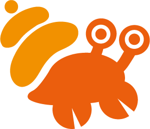

Visual Design / Brand Identity
寄住吧！
Brand Identity Design
Collaborator｜何珮瑄
Type｜品牌識別設計
Output｜CIS 系統、平面應用、展覽視覺

Project
本專案為品牌識別設計課程成果，以線上展覽形式重新建構品牌視覺系統， 並發展完整的 CIS 應用。
Concept
「寄住吧！」以寄居蟹為核心意象。寄居蟹會依環境更換外殼， 而品牌在不同設計者手中，也會呈現出多樣的樣貌與詮釋。
Visual
主視覺圍繞「殼＝品牌載體」的概念，將食物、飲料、購物、書籍等元素 轉化為不同外殼，象徵品牌在不同情境中的延伸與轉變。
